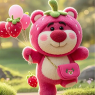
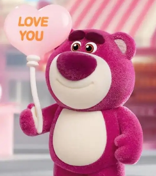

草莓熊
- 性别:男
- 兴趣：喜欢电影
- 性格：憨厚可爱活泼
- 国籍：美国
个人主页
草莓熊（Lots-o'-Huggin' Bear/Lotso）是迪士尼动画电影《玩具总动员3》中的经典角色，以下是关于它的综合介绍：
一、角色背景与故事 身世与性格 草莓熊原本是主人黛茜心爱的玩具，但因意外被遗弃在荒野，导致其性格逐渐扭曲，成为表面憨厚可爱、内心复杂的反派角色。它曾带领伙伴小丑、大宝宝在阳光幼儿园建立“失败玩具”的统治，试图掩盖被遗弃的痛苦经历。 情感内核 尽管被塑造成反派，草莓熊对主人的执念与缺爱的脆弱引发观众共情。它最终展现了“恨是爱的另一种形式”，渴望被爱却用极端方式掩饰伤痛。
二、形象与特点 外观设计 草莓熊以粉红色为主色调，毛茸茸的圆润体型搭配草莓香气，憨态可掬的形象极具辨识度12。其身上点缀草莓图案，圆眼透出天真光芒，形成反差萌感。
- 